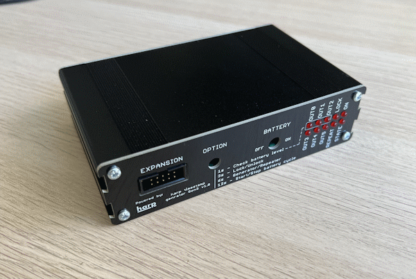

Namespace Harp.TimestampGeneratorGen3
Harp Timestamp Generator Gen3
This device generates programable timestamps to up to 6 harp devices.

Key Features
- TBA
Connectivity
- TBA
Interface
The interface with the Harp Output Expander can be done through Bonsai.
Licensing
Each subdirectory will contain a license or, possibly, a set of licenses if it involves both hardware and software.
| TimestampGeneratorGen3 | |
|---|---|
| whoAmI | 1158 |
| firmwareVersion | 1.1 |
| hardwareTargets | 1.2 |
Registers
| name | address | type | length | access | description | range | interfaceType |
|---|---|---|---|---|---|---|---|
| Config | 32 | U8 | Write | Specifies the device configuration | ConfigurationFlags | ||
| DevicesConnected | 33 | U8 | Event | Reads whether the port has a device connected to (bitmask) | |||
| RepeaterStatus | 34 | U8 | Write | Check whether device is a repeater or spreading internal timestamp | RepeaterFlags | ||
| BatteryRate | 35 | U8 | Write | Configure how often the battery calue is sent to computer | BatteryRateConfiguration | ||
| Battery | 36 | Float | Event | Reads the current battery charge | |||
| BatteryThresholdLow | 37 | Float | Write | Specifies the low threshold from where the battery should start to be charged | |||
| BatteryThresholdHigh | 38 | Float | Write | Specifies the high threshold from where the battery stops being charged | |||
| BatteryCalibration0 | 39 | U16 | Write | ||||
| BatteryCalibration1 | 40 | U16 | Write |
Classes
- AsyncDevice
Represents an asynchronous API to configure and interface with TimestampGeneratorGen3 devices.
- Battery
Represents a register that reads the current battery charge.
- BatteryCalibration0
Represents a register that manipulates messages from register BatteryCalibration0.
- BatteryCalibration1
Represents a register that manipulates messages from register BatteryCalibration1.
- BatteryRate
Represents a register that configure how often the battery calue is sent to computer.
- BatteryThresholdHigh
Represents a register that specifies the high threshold from where the battery stops being charged.
- BatteryThresholdLow
Represents a register that specifies the low threshold from where the battery should start to be charged.
- Config
Represents a register that specifies the device configuration.
- CreateBatteryCalibration0Payload
Represents an operator that creates a message payload for register BatteryCalibration0.
- CreateBatteryCalibration1Payload
Represents an operator that creates a message payload for register BatteryCalibration1.
- CreateBatteryPayload
Represents an operator that creates a message payload that reads the current battery charge.
- CreateBatteryRatePayload
Represents an operator that creates a message payload that configure how often the battery calue is sent to computer.
- CreateBatteryThresholdHighPayload
Represents an operator that creates a message payload that specifies the high threshold from where the battery stops being charged.
- CreateBatteryThresholdLowPayload
Represents an operator that creates a message payload that specifies the low threshold from where the battery should start to be charged.
- CreateConfigPayload
Represents an operator that creates a message payload that specifies the device configuration.
- CreateDevicesConnectedPayload
Represents an operator that creates a message payload that reads whether the port has a device connected to (bitmask).
- CreateMessage
Represents an operator which creates standard message payloads for the TimestampGeneratorGen3 device.
- CreateRepeaterStatusPayload
Represents an operator that creates a message payload that check whether device is a repeater or spreading internal timestamp.
- CreateTimestampedBatteryCalibration0Payload
Represents an operator that creates a timestamped message payload for register BatteryCalibration0.
- CreateTimestampedBatteryCalibration1Payload
Represents an operator that creates a timestamped message payload for register BatteryCalibration1.
- CreateTimestampedBatteryPayload
Represents an operator that creates a timestamped message payload that reads the current battery charge.
- CreateTimestampedBatteryRatePayload
Represents an operator that creates a timestamped message payload that configure how often the battery calue is sent to computer.
- CreateTimestampedBatteryThresholdHighPayload
Represents an operator that creates a timestamped message payload that specifies the high threshold from where the battery stops being charged.
- CreateTimestampedBatteryThresholdLowPayload
Represents an operator that creates a timestamped message payload that specifies the low threshold from where the battery should start to be charged.
- CreateTimestampedConfigPayload
Represents an operator that creates a timestamped message payload that specifies the device configuration.
- CreateTimestampedDevicesConnectedPayload
Represents an operator that creates a timestamped message payload that reads whether the port has a device connected to (bitmask).
- CreateTimestampedRepeaterStatusPayload
Represents an operator that creates a timestamped message payload that check whether device is a repeater or spreading internal timestamp.
- Device
Represents an observable source of messages from the Harp device connected at the specified serial port.
- DevicesConnected
Represents a register that reads whether the port has a device connected to (bitmask).
- FilterRegister
Represents an operator that filters register-specific messages reported by the Harp.TimestampGeneratorGen3 device.
- Format
Represents an operator which formats a sequence of values as specific TimestampGeneratorGen3 register messages.
- GroupByRegister
Represents an operator that groups the sequence of Harp.TimestampGeneratorGen3" messages by register type.
- Parse
Represents an operator which filters and selects specific messages reported by the TimestampGeneratorGen3 device.
- RepeaterStatus
Represents a register that check whether device is a repeater or spreading internal timestamp.
- TimestampedBattery
Provides methods for manipulating timestamped messages from the Battery register.
- TimestampedBatteryCalibration0
Provides methods for manipulating timestamped messages from the BatteryCalibration0 register.
- TimestampedBatteryCalibration1
Provides methods for manipulating timestamped messages from the BatteryCalibration1 register.
- TimestampedBatteryRate
Provides methods for manipulating timestamped messages from the BatteryRate register.
- TimestampedBatteryThresholdHigh
Provides methods for manipulating timestamped messages from the BatteryThresholdHigh register.
- TimestampedBatteryThresholdLow
Provides methods for manipulating timestamped messages from the BatteryThresholdLow register.
- TimestampedConfig
Provides methods for manipulating timestamped messages from the Config register.
- TimestampedDevicesConnected
Provides methods for manipulating timestamped messages from the DevicesConnected register.
- TimestampedRepeaterStatus
Provides methods for manipulating timestamped messages from the RepeaterStatus register.
Enums
- BatteryRateConfiguration
Specifies the rate at which the battery charge is sent.
- ConfigurationFlags
Specifies configuration flags for the device.
- RepeaterFlags
Specifies whether the device is a clock repeater.